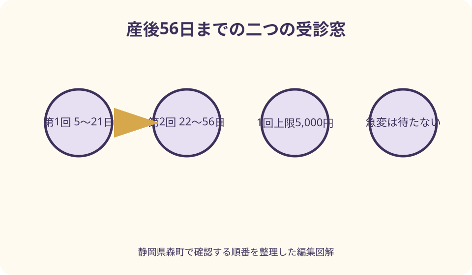
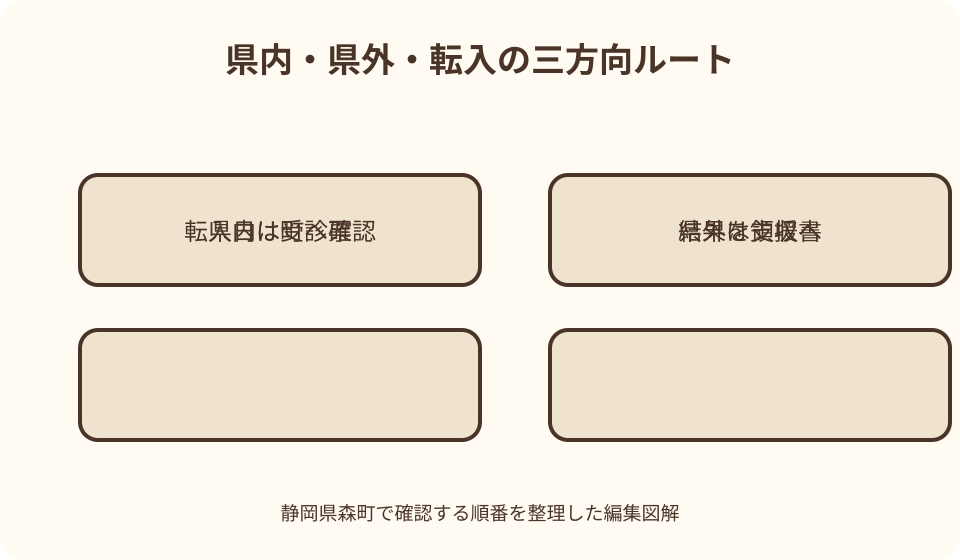

妊娠・子育て手続｜最終確認 2026-08-10
静岡県森町の産婦健康診査｜受診票・2週間と1か月・県外受診の手続
森町の産婦健康診査は、産後間もない本人の身体の回復、授乳状況、こころの状態などを確認する健診です。町は母子健康手帳交付時に第1回・第2回の受診票を渡し、第1回を産後2週間、第2回を産後1か月の時期として案内しています。県外の里帰り先では受診票を直接使えない場合があるため、予約前の確認、領収書原本、未使用受診票、健診結果の記載を一続きで管理します。

編集イラスト最初に結論：予約・受診票・相談先を別々に確認する
産婦健康診査は、赤ちゃんの1か月児健診とは別に、出産した本人の心身を確認する健診です。赤ちゃんの予約があるから本人の健診も自動的に予約済みとは限りません。
森町の受診票は第1回と第2回に分かれ、使える時期が示されています。退院時に出産施設から案内された予約日と受診票の回を照合します。
県内の実施機関では受診票による助成、県外・里帰り先では一度支払った後の助成申請になる場合があります。同じ健診でも支払方法が異なるため、受診前に確認します。
日常の育児不安や休息の相談は健康こども課、急な症状や緊急性のある状態は医療機関等が入口です。定期健診の日まで待つ相談かどうかを家庭だけで判断しないようにします。
森町の受診時期は2週間と1か月
森町公式は、第1回を産後2週間、おおむね出産後5日から21日以内と案内しています。『2週間の日だけ』ではなく、示された期間内で医療機関と予約を決めます。
第2回は産後1か月、おおむね出産後22日から56日以内です。月の呼び方だけで予約せず、出産日を起点に日付を数え、受診票の回を確認します。
国の産婦健康診査事業も、産後2週間、産後1か月など出産後間もない時期を想定し、対象者1人につき2回以内としています。森町の具体的な日数は町公式を基準にします。
医師等から別の受診時期を指示された、入院が長引いた、予約が期間外しか取れない場合は、医療上の必要性を医療機関、受診票の取扱いを健康こども課へ確認します。
産婦健康診査受診票は母子健康手帳交付時に受け取る
森町は、産婦健康診査受診票を母子健康手帳の交付時に渡すと案内しています。出産後に初めて探すのではなく、妊婦健診の券と分けて保管します。
受診票には第1回・第2回があるため、予約日に使う方を確認します。自分で切り離すか、どの欄を記入するかは受診票と医療機関の案内に従います。
紛失、汚損、転入などで手元にない場合は、健康こども課こども家庭係へ早めに相談します。再交付や新しい住所地での扱いを記事だけで断定しません。
母子健康手帳も持参物です。出産記録と健診結果を継続して確認できるよう、赤ちゃんの手続用書類とは別のすぐ取り出せる袋に入れます。
助成は2回まで、1回上限5,000円
森町の現行案内では、産婦健康診査の助成は対象者1人につき2回まで、1回につき上限5,000円です。上限を超えた部分は自己負担になります。
受診票があれば健診費用が必ず全額無料になるわけではありません。予約時または受付時に、予定する健診費用と追加の診察・検査がある場合の支払を確認します。
国の事業要綱にも、産婦健康診査1回当たり5,000円を上限として市町村へ請求する枠組みが示されています。ただし実際の助成は森町の要件を確認します。
保険診療となる診察や治療が同日に行われる場合、健診助成とは会計が分かれる可能性があります。明細を受け取り、不明な費用は医療機関へ尋ねます。
健診内容は身体・授乳・こころをまとめて確認する
森町は、問診、診察、血圧・体重測定、尿検査、子宮復古、悪露の状態、こころの健康チェックを健診内容として掲載しています。
国の事業要綱では、生活環境、授乳状況、育児不安、既往歴、服薬歴、乳房の状態等の把握も対象項目に含まれます。すべてが同じ方法で行われるとは限りません。
質問票の回答から自分で病名や重症度を決めないでください。回答は、現在のつらさや支援の必要性を医療機関と共有する入口です。
健診結果を聞いたら、次の受診や相談が必要か、誰へ連絡するか、期限はいつかを確認します。『問題なし』という短い記憶だけでなく、説明と次の行動を記録します。

予約は出産施設へ確認する
森町は健診場所を、出産した医療機関・助産所のうち県内の健康診査実施機関と案内しています。退院前に、2週間と1か月の予約方法を尋ねます。
出産施設で一方の健診だけ行う、予約日が指定されるなど運用が異なる場合があります。森町の受診票を扱えるか、受付へ事前に伝えます。
赤ちゃんの健診と同じ日に受ける場合も、本人の受診票と母子健康手帳を忘れないようにします。診察時間や付き添い、授乳場所も確認すると移動負担を見積もれます。
出産施設以外で受けたい事情がある場合は、予約前に健康こども課と希望先へ相談します。受診票が利用できる実施機関かを家庭の推測だけで決めません。
受診前チェックは本人のことを中心にする
持ち物の基本は、該当回の産婦健康診査受診票と母子健康手帳です。医療機関から指定された本人確認・保険資格に関する物や退院資料も確認します。
出血、痛み、発熱感、排せつ、睡眠、食事、授乳、服薬、気分など、受診時に伝えたい変化を日付とともにメモします。数値が分からないものは印象だけでも構いません。
薬やサプリメントを自己判断で中止・増減せず、名称と使用状況を示します。授乳中の使用可否も、処方した医師や薬剤師へ確認します。
家族は赤ちゃんの荷物だけでなく、本人が診察中に休める時間や移動手段を準備します。本人が一人で医療者へ話したい内容があれば、その時間を確保します。
県外・里帰り先で受診するとき
里帰り等で県外の医療機関または助産所へ行く場合、森町の受診票を窓口で直接使えないことがあります。受診前に健康こども課と受診先へ連絡します。
森町は、県外で受診票を使用せず産婦健康診査を受けた場合、公費負担額を上限に健診費用の一部を助成すると案内しています。いったん全額を支払う可能性があります。
受診票には健診結果を記載してもらう必要があります。予約時に森町の様式へ記入できるかを確認し、受付で未使用受診票を提示します。
県外ならどの診察も助成対象になるとは限りません。国の要件に沿う産婦健康診査か、追加診療は別会計かを医療機関と町へ確認します。
里帰り受診の申請書類と期限
町が示す申請資料は、健診費用が明記された領収書、未使用の産婦健康診査受診票、母子健康手帳、申請者名義の口座が分かる物、印鑑です。
領収書はレシートでは不可と明記されています。医療機関名、受診日、金額、健診内容を確認できる原本と明細を受け取り、コピーを家族用に残します。
申請期限は産婦健康診査を受けた日から1年以内です。第1回と第2回で受診日が違うため、それぞれの期限を予定表へ書きます。
助成額は実際に支払った健診費と上限の範囲で町が確認します。交通費、文書料、保険診療分などが含まれるかを家庭で判断せず、明細を示して確認します。
里帰り先から戻る前にすること
里帰り中に2回とも受診するのか、第2回だけ森町へ戻って受けるのかを、出産日と帰宅予定日から決めます。受診票の時期を外れないよう早めに予約します。
里帰り先で受診した結果、追加の受診や支援を勧められた場合は、森町へ戻った後の連絡先を確認します。紹介状や検査結果が必要か医療機関へ尋ねます。
帰宅予定が延びた場合は、森町と予約先へ伝えます。県外助成の書類を受診後に集め直すのではなく、領収書と受診票への記載をその場で確認します。
里帰り先自治体の産後支援を利用した場合は、利用日と内容を森町へ共有します。同じ名称でも産婦健康診査、産後ケア、訪問支援は別の取扱いです。
産後に森町へ転入した場合
産後2週間または1か月の健診前に森町へ転入した人は、前自治体の受診票をそのまま使えると考えず、健康こども課へ連絡します。
伝える項目は、出産日、転入日、すでに受けた産婦健診の回数と日付、残る受診票、次の予約、出産施設です。母子健康手帳と旧受診票を手元に置きます。
受診日時点の住民登録や自治体の交付条件により助成の窓口が変わり得ます。転入前の受診分まで森町へまとめて申請できるとは決めつけません。
転入が受診期間の境目に重なる場合は、前自治体と森町の双方へ早く相談します。事務手続を理由に必要な診察を延期するかどうかは、医療機関の指示なしに決めないでください。

健診結果と町の支援をつなぐ
国の事業要綱は、健診結果が実施機関から市町村へ速やかに報告される体制と、支援が必要な人を産後ケア等へつなぐ仕組みを求めています。
健診で健康こども課からの連絡を案内された場合は、連絡可能な時間と方法を伝えます。知らない番号を避けたい人は0538-86-6330を登録します。
結果の共有範囲や個人情報の扱いについて疑問があれば、受診先または町へ質問します。家族への共有も本人の意思を尊重します。
支援の提案を受けたことを、病気が確定した、育児ができないと解釈しないでください。休息、相談、訪問、医療など必要な選択肢を一緒に検討するための連携です。
産婦訪問・電話相談・窓口相談
森町は、本人の希望や産後の経過等に応じて保健師・助産師が産婦訪問を行い、電話や窓口でも相談に応じると案内しています。
健診予約日より前に不安がある、外出が難しい、健診後も相談したい場合は健康こども課こども家庭係へ連絡します。相談内容を一つに絞る必要はありません。
赤ちゃん訪問は生後4か月までの赤ちゃんの体重測定や育児相談、産婦訪問は産後本人の希望や経過に応じた訪問です。名称が似ていても町へ目的を伝えます。
相談は診療の代わりではありません。症状の診断、薬の変更、受診の必要性については、出産施設やかかりつけ医等へ確認します。
産後ケア事業は健診と別に申し込む
産後ケアは、宿泊、通所、居宅訪問などで休息や授乳・育児の支援を受ける事業です。産婦健康診査の受診票で利用する健診とは目的、申込、費用が異なります。
森町は、心身の不調や育児不安がある、休養や育児・授乳指導が必要な産後1年未満の本人と赤ちゃんを対象として案内しています。個別の利用可否は町が確認します。
利用を希望する場合は健康こども課へ相談し、聞き取り後に申請します。健診結果から勧められた場合も、自動予約されるとは考えず手順を確認します。
痛みや発熱があり受診・緊急処置が必要な場合など、産後ケアの対象外とされる場面があります。支援サービスの予約より医療相談を優先します。
急な症状は定期健診を待たない
産婦健康診査は予定日に受ける定期的な確認です。急に状態が変わった、出産施設から受診するよう指示された場合は、2週間・1か月の予約日まで待ちません。
症状の程度をインターネットの記事だけで判断せず、出産した医療機関やかかりつけ医へ連絡します。いつから、どのように変化したか、服薬、出産日を伝えます。
静岡県の救急安心電話相談#7119は、急な病気やけがで受診や救急車の利用を迷う概ね15歳以上の人を対象に、24時間助言を行うと案内しています。
明らかに緊急性が高い場合は119番を利用します。こころの危機や自分・赤ちゃんの安全を保てない不安がある場合も、一人で健診日を待たず、家族、医療機関、緊急窓口へ直ちに助けを求めます。
死産・流産を経験した人の健診と相談
国の産婦健康診査事業要綱は、対象に死産や流産を経験した人を含むとしています。赤ちゃん同伴を前提とした案内がつらい場合も、健診や相談を遠慮する必要はありません。
森町の受診票の使い方、受診時期、予約先は健康こども課と医療機関へ個別に確認します。一般的な出産後の流れをそのまま当てはめません。
受付や待合での配慮を希望する場合は、予約時に伝えられる範囲で相談します。家族が連絡を代わる場合も、本人の希望を確認します。
身体の診察とこころの支援は別々の入口になることがあります。どちらか一方だけで十分と決めず、本人が必要とする支援先を案内してもらいます。
仕事へ戻る時期と健診記録
産後休業中に健診を受ける場合は、予約日時と移動時間を家族・勤務先へ共有します。赤ちゃんの預け先や同行者も同時に決めます。
厚生労働省の働く女性向け案内は、通常、産後4週前後に健診等を受けること、産後休業終了後も回復不全等で受診が必要な場合があることを示しています。
医師等から勤務上の配慮について説明を受けた場合は、必要な書類や伝え方を確認します。健診結果から自分で就業可否を決めません。
勤務先へ共有する情報は必要な範囲にします。家族用メモ、医療機関の記録、会社への提出物を一つの写真にまとめず、安全に保管します。
よくある取り違えを避ける
第一の取り違えは、赤ちゃんの1か月児健診を予約すれば本人の産婦健診も含まれると思うことです。予約名、受診者、受診票を別に確認します。
第二は、受診票があれば費用が全額助成されると思うことです。森町は1回上限5,000円で、超過分は自己負担と案内しています。
第三は、県外で森町の受診票を受付へ渡せば直接使えると思うことです。事前確認し、使えない場合は結果記載、領収書、未使用票をそろえます。
第四は、健診まで症状を待つことです。定期健診、町の生活相談、医療機関への緊急相談を別の連絡先として持ちます。
産婦健康診査の良い点
良い点は、出産後の本人の身体とこころを、赤ちゃんの世話とは別の主題として確認できることです。家族も本人の受診時間を確保する理由を共有できます。
2週間と1か月の二回があることで、一時点だけでなく生活が始まった後の変化も相談できます。前回から変わったことをメモして持参します。
健診結果を町の産婦訪問や産後ケアへつなげる仕組みがあります。一回の診察で悩みを解決できなくても、次の支援を決める入口になります。
県外受診にも費用助成の道が用意されているため、里帰り中でも受診方法を相談できます。ただし自動適用ではなく、受診前の確認と申請資料の保管が必要です。
町の案内へ注文したい点
注文したい点は、森町の詳しい産婦健康診査情報が長い妊娠・出産総合ページの中にあり、出産直後の人が必要箇所を見つけにくいことです。
第1回・第2回の期限、県内直接助成、県外償還払い、転入時の確認を一枚にした専用ページがあれば、家族も手続を代わりやすくなります。
受診票を紛失した場合、出産施設以外へ変更する場合、期間外になりそうな場合の連絡順も、よくある質問として示してほしいところです。
緊急受診と産後ケアの境目も、具体的な連絡先と一緒に案内されると安全です。現在は迷った時点で医療機関または健康こども課へ連絡します。
予定どおり受けられないときの代案・結論
代案・結論として、予約が受診期間内に取れない場合は、出産施設と健康こども課へ同日に連絡します。受診時期と受診票の扱いをそれぞれ確認します。
受診票を紛失した場合は、なくした回、出産日、予約日を町へ伝えます。コピーや別の券で代用できると判断せず、再交付等の案内を受けます。
里帰り先で領収書の記載が不足した場合は、医療機関へ再発行・証明の可否を相談します。レシートだけで申請できるとは考えません。
外出が難しい、家族支援がない場合は、産婦訪問や産後ケアも相談します。ただし急な症状があるなら、訪問調整より医療機関への連絡を優先します。
大石の視点：本人の予約を赤ちゃんの予定の横へ置く
大石の視点では、産後の予定表が赤ちゃんの健診、予防接種、出生手続だけで埋まると、本人の受診が後回しになります。本人の2回の健診を最初から別の色で置きます。
森町の山間部から出産施設へ通う家庭では、往復時間、授乳、赤ちゃんの同行、運転者の確保が必要です。予約時刻だけでなく家を出る時刻と帰宅後の休息を決めます。
家族が書類を担当するなら、受診票と母子健康手帳、県外なら領収書原本を一つの袋にします。本人は症状と質問のメモに集中できる分担が実用的です。
住まいの引っ越しが重なる場合は、出産日、転入日、各健診日を並べます。住所変更の手続完了だけで助成元を判断せず、受診日時点の扱いを両自治体へ確認します。
図解案1：産後56日までの二つの受診窓
一つ目の図解は、出産日から56日までの横長カレンダーです。5日から21日を第1回の緑窓、22日から56日を第2回の橙窓として示します。
各窓には、予約、該当受診票、母子健康手帳、1回上限5,000円を配置します。赤ちゃんの健診は別線にして、同日でも別の受診だと分かるようにします。
県外受診の場合は窓の下へ、事前確認、いったん支払、結果記載、領収書保管、1年以内の町申請という点線を引きます。
急な症状の赤線はカレンダーを横切り、日付を待たず医療機関へ向かいます。定期健診の窓と救急の入口を視覚的に分けます。
図解案2：県内・県外・転入の三方向ルート
二つ目の図解は、手元の受診票と受診日を出発点にします。県内実施機関、県外里帰り先、転入直後の三方向へ分岐します。
県内は予約先で受診票を提出し、上限を超える部分を確認します。県外は町と受診先へ事前連絡し、領収書と結果記載を受け取ります。
転入は出産日、転入日、受診済回数、次回予約、旧券を町へ提示します。受診日時点の住所地によって相談先を分けます。
三つの終点を、健診結果、次回受診、産婦訪問、産後ケアへ合流させます。緊急時だけは別の赤線で医療機関・救急へつなぎます。
家族用の受診チェックリスト
日付欄には、出産日、第1回候補期間、第2回候補期間、予約日、転入日、里帰りから戻る日を書きます。曖昧な『2週間ごろ』だけにしません。
持ち物欄には、第1回または第2回受診票、母子健康手帳、医療機関指定の物、質問メモを記載します。県外なら領収書原本の確認欄も加えます。
相談欄は、身体、授乳、睡眠、気分、家族支援、仕事復帰に分けます。本人が医療者へ一人で話したい項目には印を付けます。
結果欄には、説明、次回予約、町からの連絡、産婦訪問・産後ケア、医療機関への再受診を分けます。家族は送迎や休息確保の担当を決めます。
まとめ：受診票を出産前から見つけておく
第一に、母子健康手帳と一緒に交付された第1回・第2回の産婦健康診査受診票を確認し、出産施設へ予約方法を聞きます。
第二に、出産日から第1回5日から21日、第2回22日から56日の期間をカレンダーへ置きます。医療機関の指示がある場合はその内容も記録します。
第三に、県外・里帰り、転入、受診票紛失があるなら、受診前に健康こども課こども家庭係へ連絡します。領収書と結果記載を後回しにしません。
本稿の一次情報確認日は2026年8月10日です。健診内容や受診の必要性は医療機関、助成と受診票は森町、急な状態は救急窓口へ最新情報を確認してください。
公式情報・確認先
掲載内容は次の一次情報を基礎に整理しました。営業、料金、催し、交通は変わるため、出発前または手続き前にリンク先で最新情報を確認してください。
- 妊娠・出産（静岡県森町、2026-08-10確認）
- 赤ちゃんが生まれたら（産婦健診等）（静岡県森町、2026-08-10確認）
- 森町産後ケア事業のご案内（静岡県森町、2026-08-10確認）
- 移住定住手続き（静岡県森町、2026-08-10確認）
- 産婦健康診査事業実施要綱（こども家庭庁、2026-08-10確認）
- 女性労働者から妊娠の報告を受けたら（厚生労働省、2026-08-10確認）
- 救急安心電話相談窓口（#7119）（静岡県、2026-08-10確認）